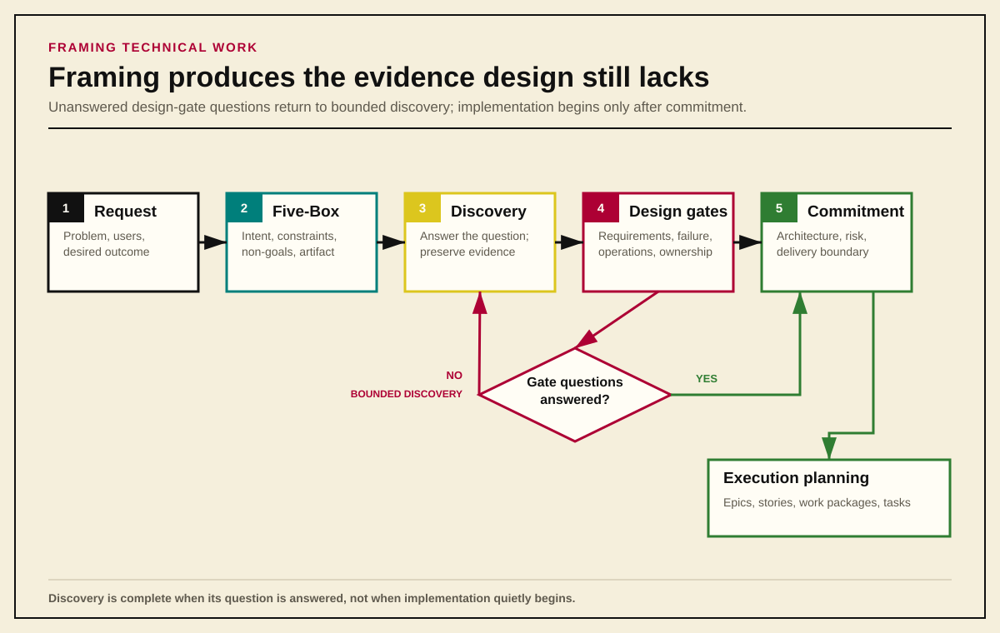
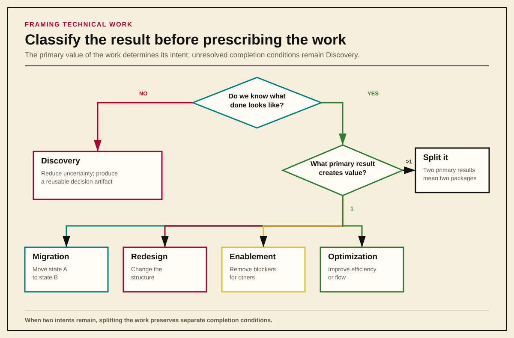
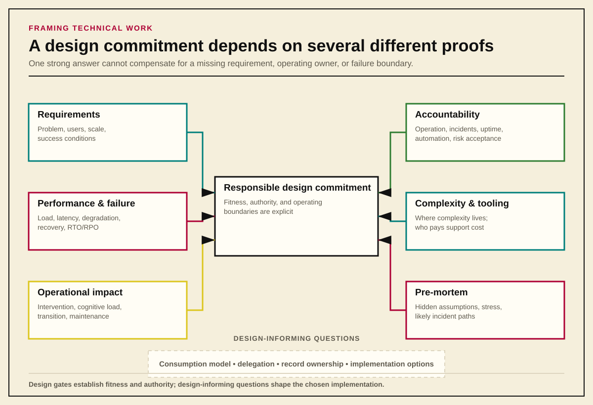

Closed-Loop Organization
Framing Technical Work Before Design
A pre-design framework for classifying ambiguous work, producing decision-ready evidence, and testing whether an architecture is ready for commitment.
Use this framework before discussing solutions for a complex project. It puts the work into a stable planning scaffold and forces the questions that need answers before design commitments, implementation promises, or timeline commitments are made.
It is a framing document, not a design document.
1. Usage
The Rule
- Do not decide details first.
- Decide what kind of thinking the work requires.
The questions in this guide are not a checklist to complete after the design has already converged. If a design-gate question cannot be answered with confidence, the design should pause. Bounding the uncertainty is sufficient only when the bounds make the design decision, risk, and risk owner explicit.
Some questions are Design Gates: they must be addressed before architectural decisions or delivery commitments are made. Others are Design Informing: they should shape the design but do not need to block early exploration.
The distinction prevents premature convergence. It also makes constraints, operational costs, decision rights, and failure modes visible before the organization commits itself to a solution.

2. The Five-Box Framing Scaffold
When a new project appears, answer five questions in writing.
1. What kind of problem is this?
Choose one primary intent:
- Discovery: reduce uncertainty;
- Migration: move state A to state B;
- Redesign: change structure;
- Enablement: remove blockers for others; or
- Optimization: improve efficiency or flow.
These are intent categories, not formal PMI categories. If the work is misclassified, it usually becomes harder to scope, sequence, explain, and review.
2. What must be true before work starts?
List constraints, not solutions:
- Is security sign-off required?
- Are organizational boundaries fixed?
- Are timelines immovable?
- Must an upstream capability or decision exist first?
This prevents fantasy planning: a plan that is internally coherent only because it ignores the conditions required to execute it.
3. What is explicitly not being solved?
Write the non-goals early. If they remain implicit, they will be reintroduced later as assumed scope.
4. What reusable artifact must exist at the end?
Examples include:
- a taxonomy;
- a decision record;
- a capability list;
- a trust model;
- a requirements set; or
- a reference pattern.
If the answer is only “running code,” this framing framework is probably no longer sufficient on its own. The work may already be in execution planning.
5. What downstream work should never need to ask “why” again?
That is the success measure for framing. The artifact should preserve the reasoning downstream work depends on: what was decided, which evidence supported it, what remained outside the boundary, and which conditions would require the decision to be revisited.
3. Determine Whether the Work Is Ready for Design or Execution
Not all problems benefit from the same planning approach. Some are well understood and can be designed largely up front. Others reveal their requirements, coupling, and constraints only through discovery.
Platform, infrastructure, and identity initiatives often fall into the second category. Attempting to specify the complete solution before understanding trust boundaries, operational realities, and failure modes creates rework while making the early plan look more certain than the evidence supports.
Framing should precede design commitments. Discovery produces evidence the design still lacks; design can proceed when its design-gate questions are answered and any remaining uncertainty is bounded. Implementation commitments should not convert unresolved decisions into tasks.
Project phases still exist
This framework is compatible with PMI-style phase thinking: initiation, planning, execution, monitoring and controlling, and closing.
Agile and Scrum change how execution and feedback loops operate. They do not eliminate initiation, planning, scope control, or decision rights.
Reference: PMI Process Groups Overview
Discovery packages and tasks
Early platform work is often better organized around outcomes than prescribed steps. This guide uses discovery package as an adapted term for ambiguous, early-phase technical work.
It is intentionally not strict PMBOK terminology:
- In PMBOK and WBS language, a work package is the lowest level of a work breakdown structure.
- Discovery-heavy technical work needs a planning unit that remains outcome-oriented but is not ready to be decomposed into execution steps.
- A discovery package fills that gap.
The term does not replace PMBOK terminology. It makes early technical planning legible without pretending discovery work is already executable.
The relationship is:
- PMBOK work package: a formal planning unit inside a WBS;
- Discovery package: a pre-execution planning unit for complex or uncertain work; and
- Story or task: an execution unit after the ambiguity has been reduced.
| Tasks | Discovery packages |
|---|---|
| Describe actions | Describe outcomes |
| Ordered and prescriptive | Loosely ordered or parallel |
| Fragile when assumptions change | Stable when assumptions change |
| Easy to micromanage | Easy to delegate |
| Good for execution | Good for discovery and alignment |
If the team does not yet know the right steps, it is usually in discovery-package territory, not task territory.
What a discovery package defines
A discovery package defines:
- the question being answered;
- the constraints under which it is explored; and
- the artifact produced when the work is complete.
This allows progress without committing prematurely to implementation details, sequencing, or tooling.
It also reflects how technical planning actually develops:
- Discovery reduces ambiguity.
- Design translates the resulting evidence into architecture.
- Execution decomposes the design into epics, stories, work packages, and tasks.
Early classification heuristics
When the work is ambiguous and the team is tempted to begin design or execution, ask:
- Do I already know what “done” looks like?
- Yes: probably not Discovery.
- No: Discovery.
- Will doing this work constrain future options?
- Yes: Redesign or Migration.
- No: Discovery or Enablement.
- Is the primary value learning, moving state, unblocking others, or
improving flow?
- Learning: Discovery.
- Moving: Migration.
- Unblocking: Enablement.
- Improving: Optimization.
When unsure, default to Discovery first. Discovery packages do not lock in assumptions, are politically safer than premature design commitments, produce reusable artifacts, and justify a later redesign without treating earlier learning as failure.
If two categories still appear equally plausible, choose the one that produces an artifact rather than a system change.

4. Discovery Package Template
Use this template for ambiguous pre-design work.
Name:
Short, outcome-oriented noun phrase
Intent:
Discovery / Enablement / Migration / Redesign / Optimization
Objective:
The question this work answers
Non-Goals:
What it explicitly does not decide
Inputs Required:
Who must be involved and what information must exist
Output Artifact:
The thing that proves the package is done
Downstream Enabled:
The work or decision that can now proceed without reconstructing the
reasoning
Stable discovery categories
The exact questions vary, but the categories remain fairly stable.
Operational impact
- What happens when this system is unavailable?
- What is the tolerated duration of failure?
- Who is paged, and with what context?
Lifecycle and change
- How often does this system change?
- Which other systems’ changes invalidate work here?
- What must be retested when this changes?
Coupling and dependencies
- What other systems assume this “just works”?
- What hidden contracts exist around timing, identity, naming, or availability?
Failure and recovery
- How do we recover from partial failure?
- What is the slowest acceptable recovery path?
- What breaks if recovery exceeds that window?
Ownership and authority
- Who decides when change is allowed?
- Who can pause a rollout?
- Who owns risk acceptance?
Refactor vague discovery epics
Backlog epics filled with “determine X” or “research Y” usually show that task-based thinking has been applied to discovery. They feel weak because they do not make progress visible and do not tell reviewers what artifact will exist at the end.
Instead of:
- Determine IAM requirements
- Research AWS authentication options
- Figure out directory structure
Use:
Epic: Platform Identity Discovery
Discovery packages:
- Identity Surface Inventory
Output: documented list of identity consumers - Authorization Verbs Definition
Output: capability list of verbs rather than group names - Trust Boundary Definition
Output: written trust model and escalation paths
Each package has a finish line, creates a reviewable artifact, and can be marked done without debate. Progress becomes visible, discovery stops pretending to be execution, and stakeholders can review outcomes rather than activity.
Example: identity framing before design
Instead of creating tasks such as:
- Design IAM roles
- Configure SSO
Create a discovery package:
Define identity types and lifecycles across platform systems
- Output: documented taxonomy of human, service, and workload identities
- Non-goal: selecting tooling or access policies
The resulting taxonomy allows downstream design to proceed without re-litigating the basic identity model.

5. Design Gate: Well-Defined Requirements
No system can be designed well without explicit requirements. Vague requirements create accidental complexity, unstable scope, and operational pain.
Questions that must be answered include:
- What problem is this system solving?
- Who is it for?
- What scale must it support on day one?
- What scale must it tolerate later?
- What outcomes define success?
Requirements are not optimization. They define whether the system is fit for purpose.
At minimum:
- performance characteristics must be stated explicitly;
- reliability expectations must be stated explicitly; and
- requirements should be SMART where possible:
- Specific;
- Measurable;
- Achievable;
- Relevant; and
- Time-bound.
Requirements must be precise enough to distinguish the target condition from nearby but misleading proxies. Specificity is not pedantry. It increases confidence that everyone is discussing the same behavior, population, operating conditions, and exception model.
“The DNS service must be fast” is not a requirement. A useful requirement defines the operating envelope: supported queries per second, steady-state and peak load, acceptable response time, and the conditions under which those thresholds must hold.
For example:
The service must sustain 250,000 queries per second, tolerate burst traffic of 500,000 queries per second for 15 minutes, keep p99 response time under 2 ms for cached lookups and under 10 ms for uncached authoritative lookups within the same region, and continue serving authoritative responses during the loss of a single node.
That statement defines an actual design target.
“Fast enough” is not a requirement.
Further reading: Eric Brandwine, AWS re:Invent 2018. The entitlement exercise demonstrates how vague goals become precisely bounded requirements.
6. Design Gate: Performance, Failure, and Recovery
Performance, reliability, degradation, and recovery behavior are design-gate topics, not implementation details.
Questions to answer:
- How many requests per second must the system handle?
- What is the expected steady-state load?
- What is the peak load?
- What latency is acceptable?
- For what percentage of requests?
- Under which operating and failure conditions?
- What happens during partial degradation?
- Which service must remain available?
- What are the recovery expectations?
- What are the RTO and RPO expectations, if applicable?
Example answers:
- The system must handle 1,000,000 requests per second.
- 99% of requests must complete in under 1 ms.
- 100% of requests must complete in under 5 ms.
These thresholds determine design fitness. They are not optional tuning targets to be discovered after implementation.
7. Design Gate: Operational Impact and Accountability
Before beginning a design, ask:
What is the operational cost of this system?
Every system carries operational cost:
- human effort;
- cognitive load;
- process complexity;
- failure modes; and
- long-term maintenance.
Operational impact is a first-class design constraint.
Questions to answer:
- Who uses the system?
- Are those users equipped to operate it safely?
- Who operates the system day to day?
- How often must a person intervene?
- What happens when it fails at 02:00?
- Who owns incident response?
- Who owns uptime?
- Who owns ongoing maintenance?
- Who owns upgrades and dependency changes?
- Who creates the automation?
- Who maintains the automation?
- How expensive will the system be to change or extend?
- Can an operator determine the required response with near-zero cognitive load from the dashboards, alerts, and procedures?
- Do the monitoring views make it obvious whether action is required, by whom, and under which conditions?
Also establish whether the work creates:
- a net-new system;
- an upgrade; or
- a replacement.
A replacement design must account for the transition in day-to-day operations, support ownership, migration, and handoff. Replacing software without replacing the old operating model leaves the organization with two systems and one incomplete decision.
Further reading: Eric Brandwine, AWS re:Invent 2018 provides useful background on reducing cognitive load in operational dashboards and decisions.
8. Manage Complexity Where People Can Afford It
In a necessarily complex design, decide where complexity can be tolerated and where it must be reduced.
Complexity can often be tolerated:
- inside automation;
- inside platform code owned by a small expert team; and
- in systems that are rarely touched after deployment.
Complexity should usually be avoided:
- in routine operational workflows;
- in emergency procedures; and
- in systems used by many teams with different skill levels.
If an action must be performed under pressure, it should be:
- boring;
- well documented; and
- highly repeatable.
Moving complexity behind an interface does not eliminate it. The owning team still pays to understand, test, operate, and change it. The design decision determines who pays and under which conditions.
9. Evaluate Tooling and Flexibility as Operating Decisions
Ask:
- Does flexibility reduce risk, or increase support burden?
- Does standardization reduce incident-resolution time?
- How many APIs and programming languages must the organization support?
- Is variation creating useful capability, or reproducing the same operating problem several ways?
- Which choices must remain flexible because the requirements genuinely differ?
For a DNS platform, the organization might ask whether to deploy Infoblox virtual appliances into cloud environments or delegate to cloud-native DNS services.
The decision must be evaluated from both:
- an operational perspective; and
- an engineering perspective.
A flexible engineering model can impose recurring support and incident-response costs on operators; standardization can make the system unfit when requirements genuinely differ. The design must identify who receives each benefit and who owns each cost.
10. Design Gate: Pre-Mortems
Before building a system, assume it has already failed.
Ask:
Some time after launch, this system caused a major incident. What went wrong?
Use the pre-mortem to identify likely failure modes:
- capacity exhaustion;
- latency degradation;
- operational overload;
- poor ownership or unclear accountability;
- automation failure; and
- unexpected usage patterns.
Pre-mortems can expose hidden assumptions, surface operational risks that happy-path design misses, and test whether the system remains operable under stress.
They work best when they:
- include operators, not only designers;
- occur before major architectural decisions are fixed; and
- become design input rather than evidence that somebody completed a required meeting.
11. Design-Informing Example: A DNS Service
If the problem is “design a new DNS service,” the following questions should be answered before solution selection.
How will people consume the service?
Will users interact through:
- a user interface;
- an API; or
- GitOps or infrastructure as code?
Also ask:
- Are different consumption models supported for different users?
- Does the model encourage safe, repeatable change?
- Does it require deep DNS expertise from every user?
Who will manage DNS, and how?
Will DNS be managed by:
- one team through service requests;
- a shared service with enforced boundaries; or
- a self-service model for application teams?
For any model:
- What boundaries exist?
- How are they enforced?
- Is enforcement procedural, technical, or both?
- How does the model scale as the organization grows?
For shared-service or self-service models:
- Which record types may a typical user modify?
- Which record types remain centrally managed?
MX, NS, and SOA records may require central management.
Who owns each record?
The design must ensure:
- only approved users can modify a record; and
- Team A cannot change records owned by Team B.
That raises additional questions:
- Does ownership affect the domain structure?
- Should ownership be delegated through subdomains?
- How are ownership and changes audited?
The answers determine the authorization model, delegation boundaries, operational workflow, and evidence the system must preserve. Choosing a DNS product before answering them would convert the product’s defaults into organizational policy without an explicit decision.
Appendix: Formal Concepts Behind the Framework
These concepts explain why the framework separates framing, discovery, design, and execution.
Agile and Scrum
Agile is the broader philosophy centered on iterative delivery, customer collaboration, and adaptability. Scrum is an opinionated implementation of Agile that applies those principles through defined roles, events, and artifacts.
Reference: Scrum Alliance
Agile and traditional project management
Agile is not a replacement for project structure. It shortens feedback loops and brings learning into execution earlier, but it does not eliminate goals, constraints, scope boundaries, and decision rights.
- Traditional planning tries to reduce uncertainty before execution.
- Agile accepts that some uncertainty can only be reduced during execution.
- Scrum changes the cadence of planning, review, and adaptation.
- None of those positions removes the need to frame the work correctly.
For novel technical work, stakeholders often refine their understanding after interacting with an early version of the solution. Iterative delivery helps teams discover and respond to that gap sooner; it does not make incomplete framing harmless.
Imagine building an automatic screwdriver for a customer. The initial requirement sounds simple: reduce the effort required to drive screws into wood. A design produced without further learning may work only for small softwood boards. Later, the customer reveals that the actual use case includes hardwood, larger lumber, reverse operation for removing screws, and safety controls against accidental activation.
The original planning was not useless. The original framing was incomplete.
PMBOK and WBS
In formal PMI terminology, a work package is the lowest level of a WBS and should be outcome-oriented and estimable. This guide borrows from that concept but uses discovery package to distinguish ambiguous planning work from formally decomposed execution work.
References: WBS Basic Principles and Work Package Sizing and Definition
Lean and Theory of Constraints
Lean and Theory of Constraints provide another useful way to examine the work’s intent:
- Discovery reduces uncertainty.
- Migration moves state A to state B.
- Redesign changes structure.
- Enablement removes blockers for others.
- Optimization improves efficiency or flow.
These are intent categories, not formal PMI categories.
Cynefin
Cynefin classifies problems as:
- Clear or Obvious: apply best practices;
- Complicated: use expert analysis;
- Complex: probe, sense, and respond; and
- Chaotic: act to stabilize.
Tasks work well in clear and complicated domains. Discovery packages are more appropriate in complex domains, where the team must reduce uncertainty before it can prescribe exact steps.